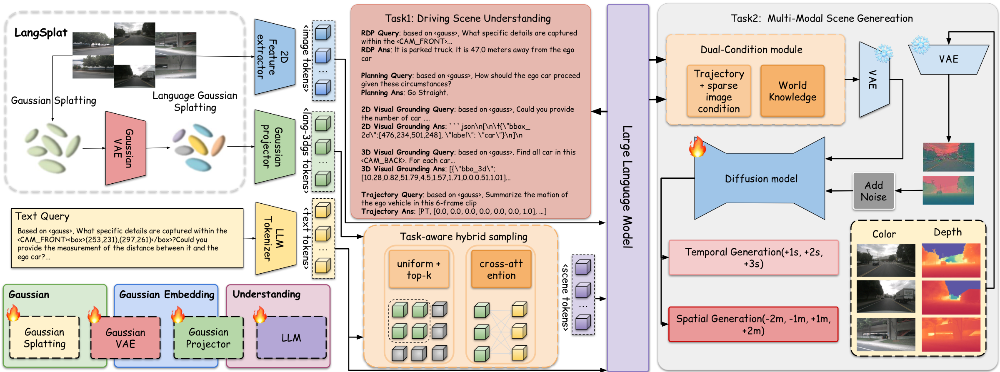
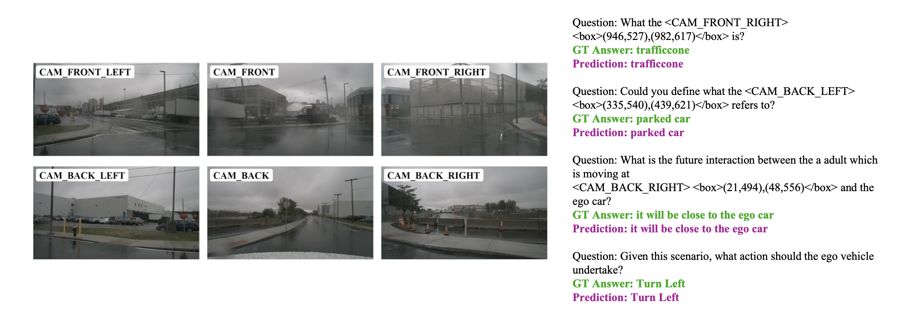
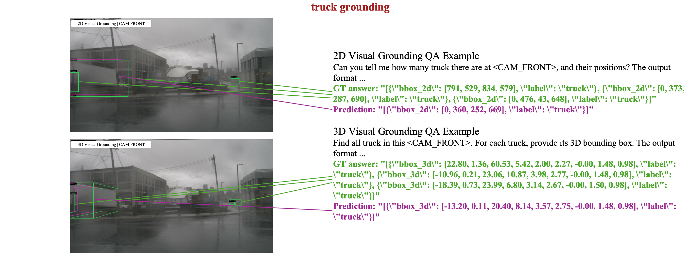
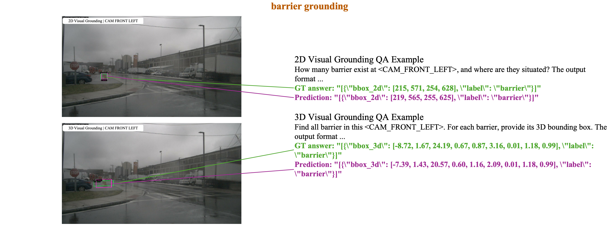

Visual Walkthrough
Unified Understanding and Generation
Driving world models have advanced rapidly, but most existing methods focus on generating future content without explicit 3D scene understanding. GaussianDWM introduces a unified driving world model based on 3D Gaussian scene representation. By embedding linguistic features into Gaussian primitives, the framework aligns language, geometry, and appearance directly in 3D space. A task-aware language-guided sampling strategy selects compact and relevant Gaussian tokens for the LLM, while a dual-condition generation module combines high-level world knowledge with low-level sparse geometric cues to support spatial scene generation and temporal future prediction.
GaussianDWM Framework

The framework injects language-augmented 3D Gaussian tokens into the LLM and uses the extracted world knowledge to guide RGB-D scene generation.
QA Visualizations
Scene understanding: RD&P and Planning

Scene understanding: 2D and 3D VG


Left and Right Viewpoint Shifts
Columns are ordered from left to right as: left 4m, left 2m, left 1m, input images, right 1m, right 2m, and right 4m.
Spatial Depth Generation
Left-offset depth generation: GaussianDWM maintains depth consistency when rendering the scene from the opposite lateral direction.
Future Prediction
Future prediction: GaussianDWM keeps semantic and spatial coherence across cloudy, rainy, and night driving scenarios.
Long-Sequence Six-View Generation
Long-sequence prediction: GaussianDWM generates coherent +3s, +5s, and +10s futures across all six camera views.
Scene Understanding and Generation
NuInteract Scene Understanding
| Model | LLM | RD BLEU ↑ | RD Rouge_L ↑ | RD CIDEr ↑ | 2D mAP ↑ | 2D F1 ↑ | 2D MIoU ↑ | 3D Pr ↑ | 3D mAP ↑ | 3D F1 ↑ | Plan ↑ | Avg. ↑ |
|---|---|---|---|---|---|---|---|---|---|---|---|---|
| LLaVA1.5 | Vicuna-7B | 64.23 | 76.69 | 74.82 | 0.10 | 0.16 | 14.31 | 6.51 | 5.33 | 3.12 | 36.20 | 28.16 |
| InternVL2-8B | InternLM2.5-7B | 67.32 | 81.39 | 80.01 | 20.61 | 25.24 | 61.90 | 31.47 | 24.67 | 14.70 | 46.93 | 45.42 |
| DriveMonkey | InternLM2.5-7B | 67.50 | 81.15 | 79.79 | 19.47 | 24.02 | 59.36 | 51.90 | 34.53 | 20.86 | 82.64 | 52.12 |
| GaussianDWM | Qwen3-8B | 68.78 | 81.06 | 78.72 | 34.95 | 40.49 | 71.85 | 50.66 | 52.78 | 32.05 | 80.95 | 59.23 |
Spatial Generation on nuScenes
| Method | Shift ±1m ↓ | Shift ±2m ↓ | Shift ±4m ↓ | |||
|---|---|---|---|---|---|---|
| FID | FVD | FID | FVD | FID | FVD | |
| PVG | 48.15 | 246.74 | 60.44 | 356.23 | 84.50 | 501.16 |
| EmerNeRF | 37.57 | 171.47 | 52.03 | 294.55 | 76.11 | 497.85 |
| StreetGaussian | 32.12 | 153.45 | 43.24 | 256.91 | 67.44 | 429.98 |
| OmniRe | 31.48 | 152.01 | 43.31 | 254.52 | 67.36 | 428.20 |
| FreeVS | 51.26 | 431.99 | 62.04 | 497.37 | 77.14 | 556.14 |
| DiST-S | 10.12 | 45.14 | 12.97 | 68.80 | 17.57 | 105.29 |
| GaussianDWM | 8.36 | 44.50 | 11.27 | 68.17 | 18.81 | 116.40 |
BibTeX
@inproceedings{deng2026gaussiandwm,
title={GaussianDWM: 3D Gaussian Driving World Model for Unified Scene Understanding and Multi-Modal Generation},
author={Deng, Tianchen and Chen, Xuefeng and Chen, Yi and Chen, Qu and Xu, Yuyao and Yang, Lijin and Xu, Le and Zhang, Yu and Zhang, Bo and Huang, Wuxiong and Wang, Hesheng},
booktitle={Proceedings of the IEEE/CVF Conference on Computer Vision and Pattern Recognition},
year={2026}
}